muretu meretee
Aastaraamat
2022
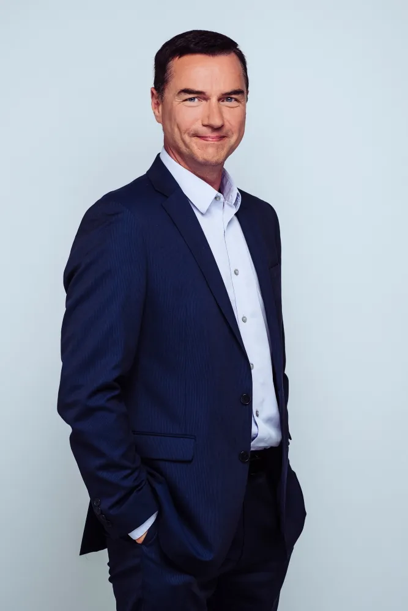
Juhatuse esimehe pöördumine
Möödunud aastat jääb eelkõige meenutama varasematel aastatel tehtud töö tulemusena saavutatud stabiilsus. Oli tegus ja töine aasta, kuid suuremaid muresid ei esinenud. Koostöö partneritega toimis ning saime keskenduda põhilisele – oma klientide sujuva ja mugava reisimise tagamisele parvalavadega üle Väinamere liikumisel.
Teenindasime Saaremaa ja Hiiumaa liinil kokku ligi 2,3 miljonit reisijat ning viisime üle mere ligi 1,1 miljonit sõidukit. Aasta jooksul langesid nii mõnedki rekordid ning reisijate ja sõidukite üldtulemus on ligilähedane 2019. ja 2021. aastate rekordilistele saavutustele. Hoolimata nii reisijate kui sõidukite suurest hulgast õnnestus meil teenust osutada ilma suuremate probleemide ja järjekordadeta. Pikemad ooteperioodid tekkisid vaid jaanipäeva paiku. Sujuvama ja kiirema ülesõidu tagas riigi poolt kogukondade ja TS Laevade ettepanekul täiendavate reiside lisamine mõlemale liinile.
2022. aastal tegime kahel liinil kokku rekordilised 22 842 liinireisi ning pikkade järjekordade tekkimisest päästsid meid Regula lisareisid, mille tegemise usaldas riik meile ilma liinigraafikut kindlaks määramata.
Teenuse veelgi suuremale sujuvusele aitasid kaasa meie investeeringuprojektid ja arendustegevused – paigaldasime Hiiumaa liini sadamaaladele LED-tablood ja sadamahoonetesse piletimüügiautomaadid, samuti võtsime rahvarohkematel perioodidel järjekordade vältimiseks uudse lahendusena kasutusele sms-teavituste süsteemi.
Praamisõidu juures peame oluliseks reisijatele lisandväärtuse pakkumist, olgu selleks näiteks kas meeleolukad kultuuriampsud, mis juhatavad juba laeval sisse saartel toimuvad suursündmused ja tähtpäevade tähistamised või reisijate teadlikkust tõstvad tegevused. Nii mõnigi reisija on öelnud, et just praamisõit on üks saarele sõidu tõmbefaktoritest. Oleme südamest tänulikud igale kliendile, kes on võtnud vaevaks meile tagasisidet anda, sest ainult nii saame aimu oma klientide ootustest ja aidata kaasa rahulolu suurenemisele.
Möödunud aastal saavutasime rekordkõrge kliendirahulolu ning selle tõstmine või isegi säilitamine saab olema väljakutseid pakkuv. Kõige suurema panuse on rekordilise kliendirahulolu saavutamisel andnud meie kallid töötajad – TS Laevade vägilased! Ilma kõigi töötajate ühise tegutsemiseta ei saaks me klientidele parimat reisiteenust pakkuda. Väärtustame iga oma töötajat, soovides olla parim tööandja laevandus- ja teenindussektoris. Töötajate rahuloluküsitluse rekordiliselt kõrged tulemused annavad aluse eeldada, et liigume oma personalipoliitikaga õigel kursil.
2022. aastat kokku võttes ei saa tähelepanuta jätta Ukrainas toimuvaid sündmuseid, mille tagajärjel tekkinud tarneraskused ja energiahindade pidurdamatu kasv pani meid veelgi rohkem läbi mõtlema oma taasteplaanid. Tänaseks saame veendunult kinnitada, et meie teenuse toimepidevus on tagatud ka erandlikes olukordades. 2022. aasta lõpp tõi selguse meie nelja parvlaeva omandiküsimustesse – riik otsustas väljaostuvõimalusest loobuda ja nüüd on TS Laevad ilma optsioonide ja kohustusteta viie parvlaeva uhkeks omanikuks. See teadmine annab meile kindlama tunde minna vastu uuele, 2023. aastal korraldatavale hankele järgnevaks teenuseperioodiks alates aastast 2026. Hankel positiivse tulemuse saavutamine avaks meie jaoks uued võimalused olemasolevate laevade muutmisel veelgi keskkonnasõbralikumaks, näiteks saaksime jätkata laevade elektrifitseerimise projektiga.
Meie esimese hübriidparvalaeva Tõllu muljetavaldavad tulemused CO2 emissiooni vähendamisel ja efektiivsuse suurendamine innovaatilise kütusekulu jälgimise süsteemi Blueflow abil annavad olulise tõuke TS Laevade ambitsioonikate keskkonnaeesmärkide saavutamiseks. Tänaseks on meil tekkinud kindel arusaam, et Väinamere parvlaevaliikluse tulevik on elektriline. Ootame uuelt aastalt uusi väljakutseid, rõõmsaid töötajaid, rahulolevaid reisijaid ja tegusat koostööd kogukondade, koostööpartnerite ja riigiga.
Head lugemist ja kohtumiseni meie laevadel!
Indrek Randveer
TS Laevad OÜ juhatuse esimees
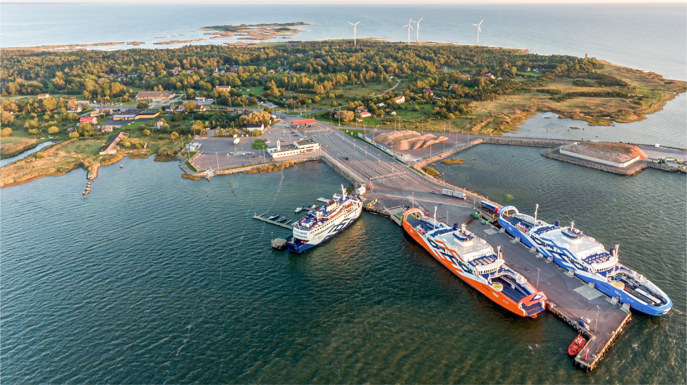
ettevõtte ülevaade aastal 2022
missioon, visioon, väärtused
TS Laevad OÜ korraldab alates 2016. aastast koostöös Eesti riigiga parvlaevaliiklust mandri ja suursaarte (Muhu-, Saare- ja Hiiumaa) vahel Virtsu-Kuivastu ja Rohuküla-Heltermaa parvlaevaliinidel. Meie põhiroll on tagada, et üleveoteenus vastaks riigiga kokkulepitule ning toimuks tõrgeteta. Soovime pakkuda parimat reisikogemust Eestis ning olla kindel ja pikaajaline koostööpartner riigile, kohalikule kogukonnale ja igale saartele reisijale. Meie tegevus põhineb ohutul navigatsioonil, reisijate ja töötajate rahulolul ning katkematul dialoogil saarte kogukondadega. Ettevõtte väärtused on meie igapäevasetegevuse lahutamatu osa ning ühendavad endas ettevõtte ja töötajate huvisid. Väärtused on esmaseks orientiiriks otsuste vastuvõtmisel, kujundavad mainet ja määravad tööpõhimõtted.
Meie vastutus
oleme seadnud eesmärgiks tagada merede puhtus, laevade korrashoid, kvaliteetne ja turvaline reisijate vedu ning tihe sidusus kogukondadega. Väinamere hoiualal ja Natura 2000 keskkonnas tegutsedes on keskkonnasõbralikkus meile väga oluline.
Meie visioon
on olla reisijatele ja Eesti riigile kindel partner, tagades efektiivse ja kvaliteetse teenuse. Sellega aitame kaasa suursaarte ettevõtluse ja turismi arengule.
Meie missioon
on pakkuda parimat reisikogemust Eestis.
Ettevõtte väärtused on meie igapäevase tegevuse lahutamatu osa ning ühendavad endas ettevõtte ja töötajate huvisid. Väärtused on esmaseks orientiiriks otsuste vastuvõtmisel, kujundavad mainet ja määravad tööpõhimõtted.
Avatus
Oleme avatud uutele ideedele ja koostööle. Soosime tarku mõtteid ja uuendusi ning leiame alati võimalusi need ellu viia. Oleme ausad ja avatud ning jagame oma kavatsuste ja tegude kohta informatsiooni nii ettevõtte sees kui ka väljaspool.
Nutikus
Teeme tarku ja arukaid otsuseid ning õigeid asju õigel ajal ja moel. Otsime, kasutame ja pakume ettevõtte konkurentsivõime tõstmiseks leidlikke ja uuendusmeelseid lahendusi.
Usaldusväärsus
Peame lubadustest kinni ja viime need kvaliteetselt ellu. Oleme oma valdkonna asjatundlikud ja mõjukad eksperdid. Suhtume lugupidavalt ja hoolivalt nii endasse kui ka teistesse.
2022 aasta olulisemad tegevusnäitajad
meie laevastik
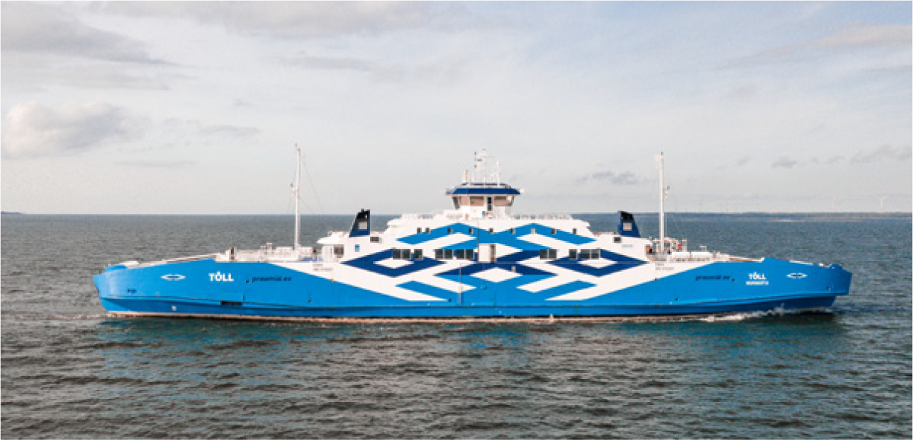
2020 ehitati reisiparvlaev Tõll ümber hübriidreisilaevaks. Laeva energiasalvestus-süsteemi akupankade mahutavuseks on 678 kWh.
Tõll
Ehituskoht: Remontowa laevatehas, Poola
Veeskamine: 2015
Kodusadam: Kuivastu
Ristiema: Lelet Aavik
Pikkus: 114,0 m
Laius: 19,7 m
Süvis: 4,0 m
Sõiduautode mahutavus: 150
Reisijate mahutavus: 700
Kiirus: 15 sõlme
Klass: DNV+1A1 R3 ICE-1A CAR FERRY B E0
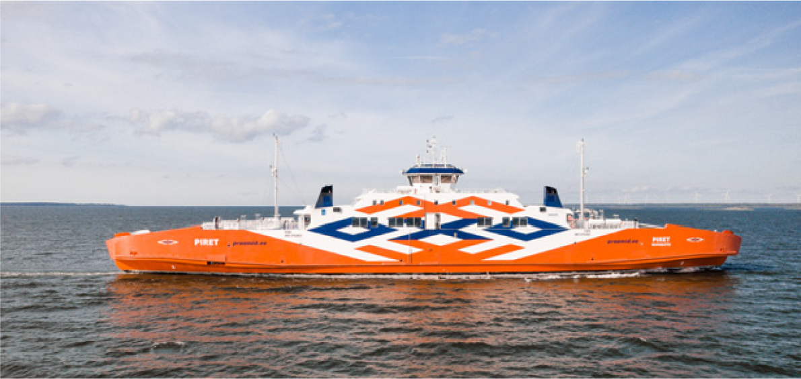
Piret
Ehituskoht: Remontowa laevatehas, Poola
Veeskamine: 2016
Kodusadam: Kuivastu
Ristiema: Mareli Ots
Pikkus: 114,0 m
Laius: 19,7 m
Süvis: 4,0 m
Sõiduautode mahutavus: 150
Reisijate mahutavus: 700
Kiirus: 15 sõlme
Klass: DNV+1A1 R3 ICE-1A CAR FERRY B E0
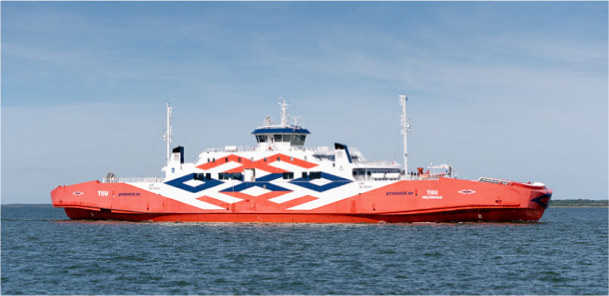
Tiiu
Ehituskoht: Sefine laevatehas, Türgi
Veeskamine: 2016
Kodusadam: Heltermaa
Ristiema: Helen Kõmmus
Pikkus: 114,0 m
Laius: 19,7 m
Süvis: 4,0 m
Sõiduautode mahutavus: 150
Reisijate mahutavus: 700
Kiirus: 15 sõlme
Klass: DNV+1A1 R3 ICE-1A CAR FERRY B E0
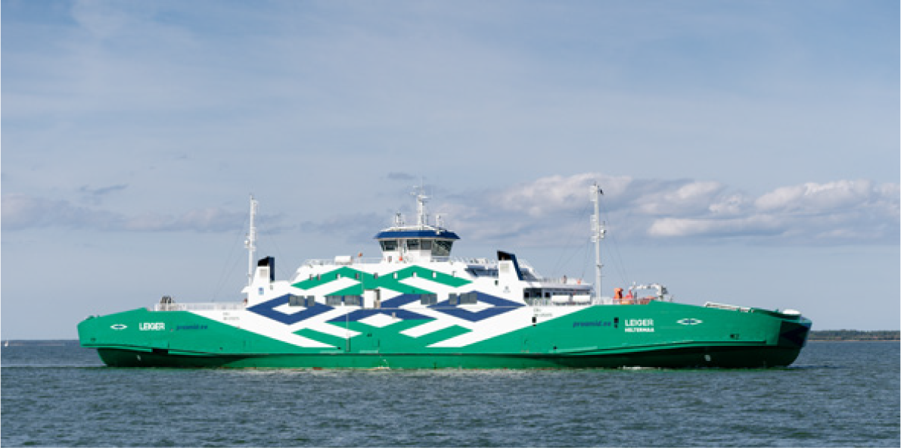
Leiger
Ehituskoht: Sefine laevatehas, Türgi
Veeskamine: 2016
Kodusadam: Heltermaa
Ristiema: Helgi Põllo
Pikkus: 114,0 m
Laius: 19,7 m
Süvis: 4,0 m
Sõiduautode mahutavus: 150
Reisijate mahutavus: 700
Kiirus: 15 sõlme
Klass: DNV+1A1 R3 ICE-1A CAR FERRY B E0
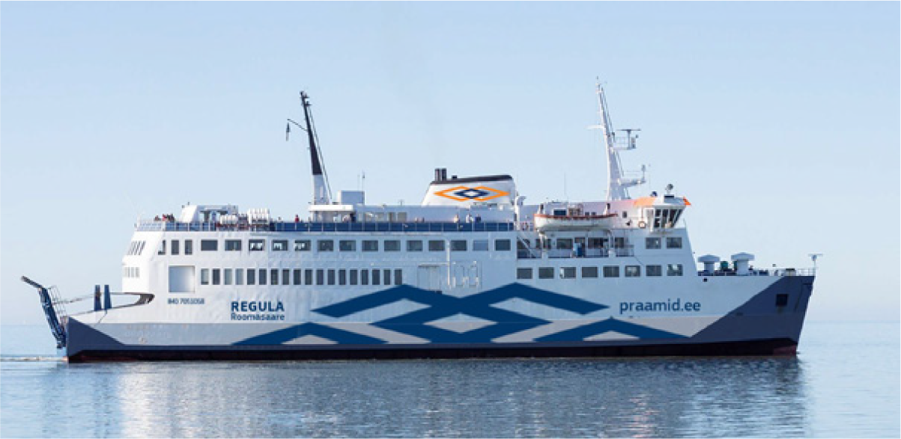
Regula
Ehituskoht: Meyer Werfti laevatehas, Saksamaa
Ehitusaasta: 1971
Kodusadam: Roomassaare
Pikkus: 71,2 m
Laius: 16,3 m
Süvis: 4,2 m
Sõiduautode mahutavus: 65
Reisijate mahutavus: 400
Kiirus: 12 sõlme
meie juhatus ja nõukogu
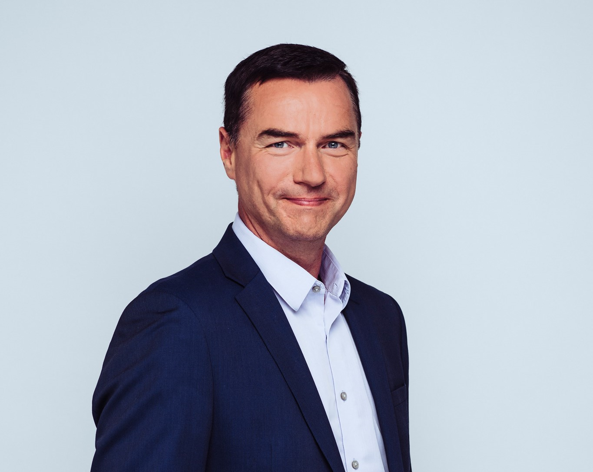
Indrek Randveer
juhatuse esimees
alates 04.01.2021
Vastutusvaldkonnad: finantsjuhtimine, kvaliteedi- ja arendustegevused, ärianalüüs. Juhatuse esimehe ülesanne on hoida ettevõte balansis, tagamaks nii klientide kui ka töötajate rahulolu, samuti tehnoloogia tõrgeteta toimimine, pidades silmas ettevõttele seatud finantseesmärke.
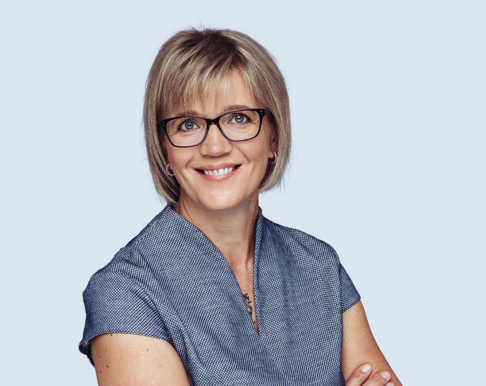
Ave Metsla
juhatuse liige
12.03.2020 – 09.12.2022
Vastutusvaldkond: Teenindusvaldkonna juht, kelle ülesandeks on parvlaeva-liikluse teenindus- ja teenuste kvaliteedi hoidmine ja arendamine. Hõlmatud on teenindus nii veebis, kaldal kui laeval, eesmärgiks tagada klientide rahulolu.
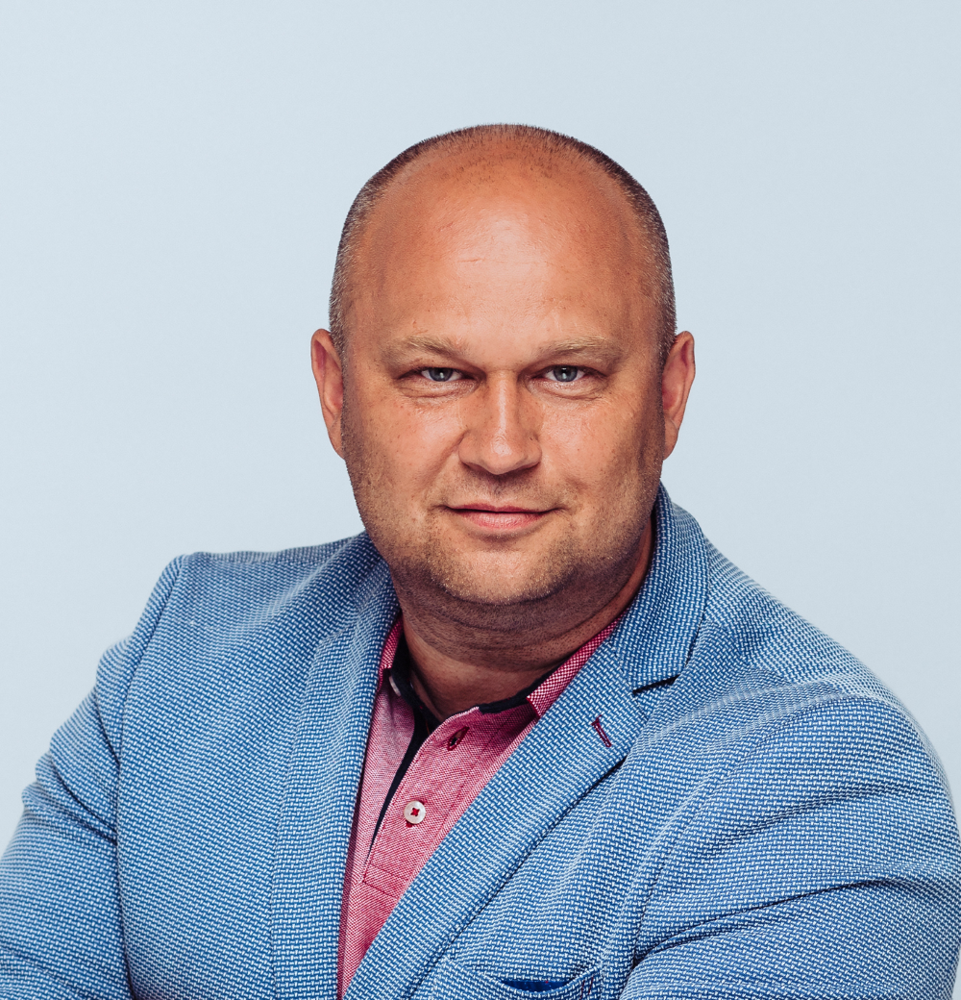
Guldar Kivro
juhatuse liige
alates 09.12.2018
Vastutusvaldkond: Laevandusvaldkonna juht , kes täidab ka peakapteni kohustusi ja kelle ülesandeks on ettevõtte esindamine kogu merendussektoris, õigusloomes ja koostöös teadus-asutustega, samuti laevade tehnilise opereerimise tagamine.
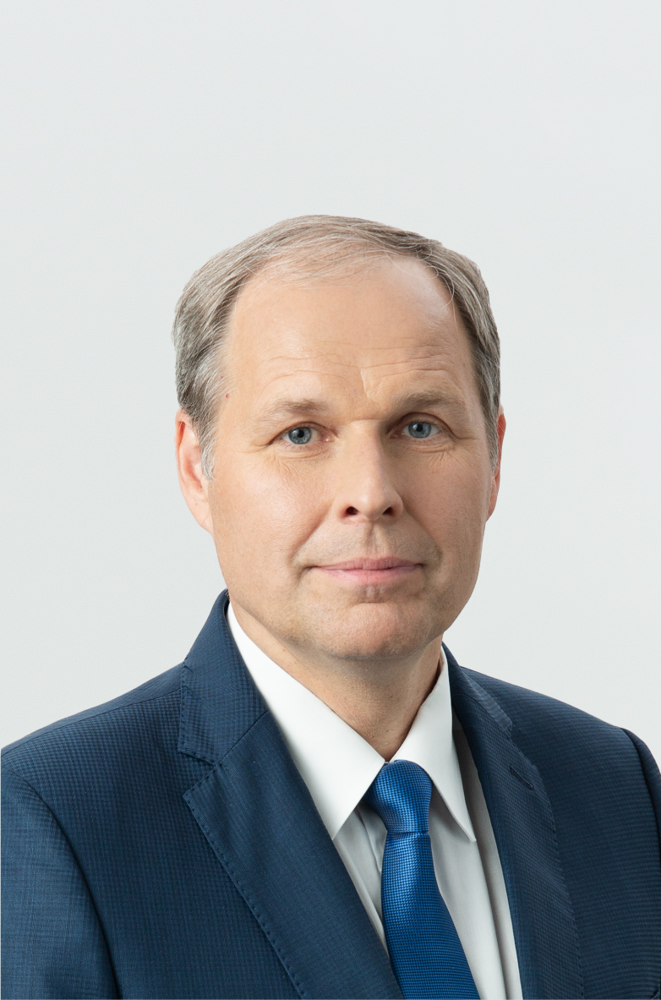
Valdo Kalm
nõukogu esimees
alates 06.02.2020
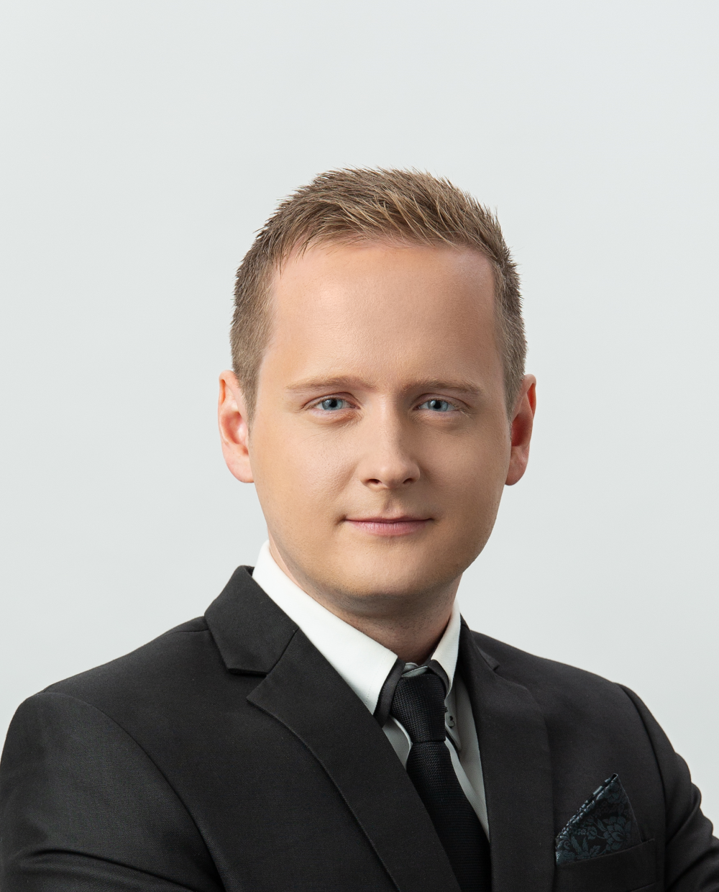
Rene Pärt
nõukogu liige
alates 15.10.2021
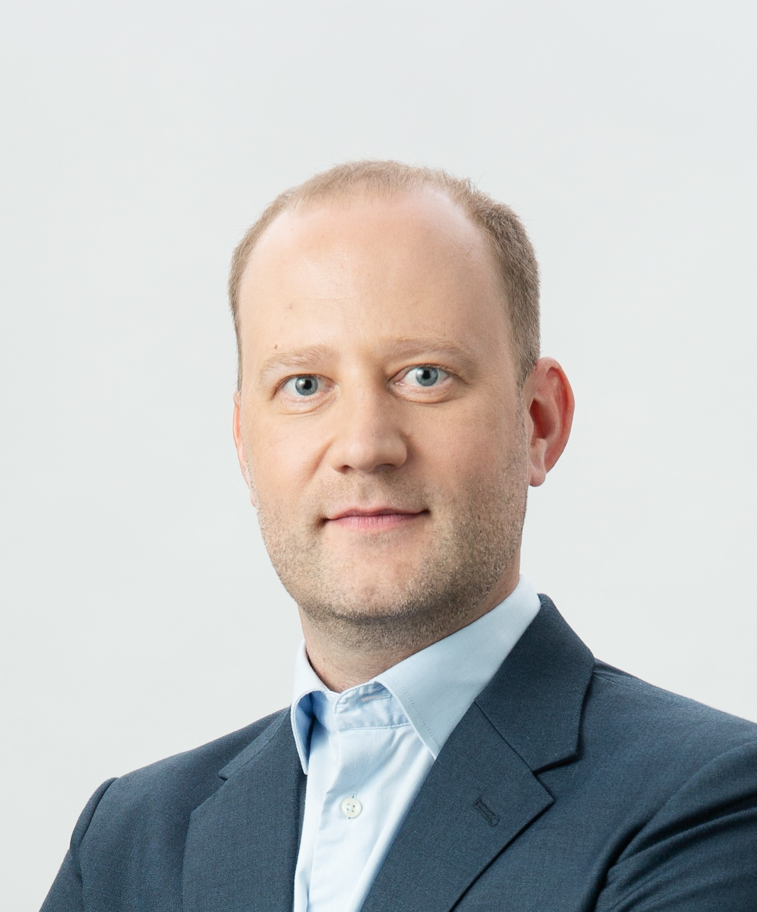
Andrus Ait
nõukogu liige
alates 28.02.2022
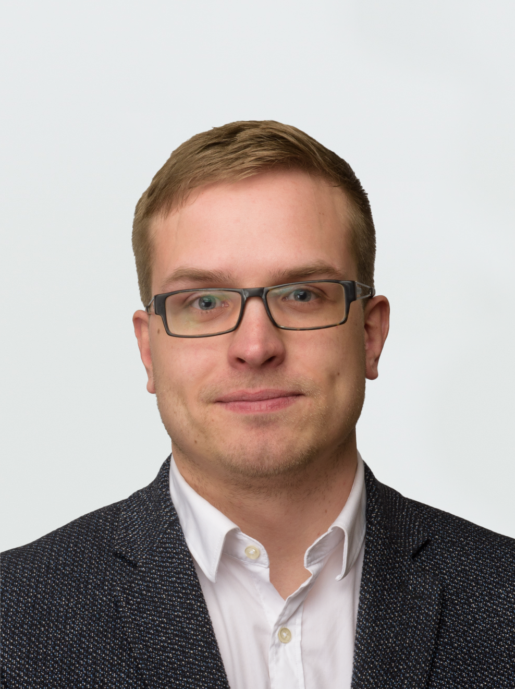
Johann Peetre
nõukogu liige
alates 06.02.2020
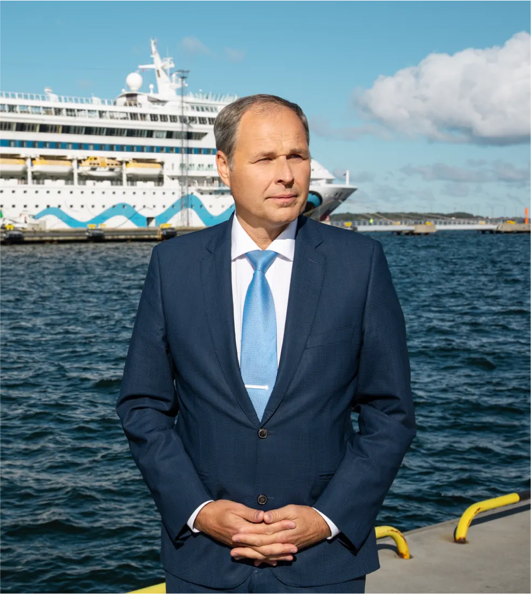
nõukogu esimehe kommentaar
2022. aasta oli taastumise aasta. Koroonapandeemia sai lõpu ning reisijad said taas vabamalt liikuda. Rõõm on näha, et suursaartele reisiti meeleldi ning ka sel aastal sai ületatud nii mõnigi rekord. Erilisem neist rekorditest on kindlasti kliendirahulolu tulemus 74%. See annab mõista, et koostöö kogukondade ja klientidega on väga hea ning TS Laevade meeskonnad mängivad kokku nagu üks hea orkester.
See aasta oli märgiline ka selle poolest, et TS Laevad ja seeläbi ka Tallinna Sadama grupp sai kindluse, et jääb kindlalt viie parvlaeva omanikuks. Seda seetõttu, et riik ei kasutanud sõitjateveo avaliku teenindamise lepingus sätestatud võimalust reisiparvlaevade väljaostuks. Seega on koos gruppi kuuluva TS Shippingu omanduses oleva jäämurdelaev Botnicaga Tallinna Sadama grupil kuuest laevast koosnev laevastik ja see annab omakorda uusi võimalusi ning loob pinnase uute äriplaanide algatamiseks.
Suhteliselt uued ning regulaarselt ja hästi hooldatud parvlaevad annavad meile kui laevafirmale head eeldused uutel hangetel osalemiseks ja oma teenuste pakkumiseks kas Eestis või kaugemalgi. Uue perioodi suursaarte parvlaevahankes olime juba eelmiselgi aastal valmis osalema, aga kuna riik seda välja ei kuulutanud, saime lisaaja parvlaevateenust üheskoos kohalike kogukondadega veelgi parendada.
Samuti on grupile endiselt väga olulised kestlikud teemad. Reisiparvlaev Tõll on taas täies mahus toimiva hübriidsüsteemiga parvlaev, mille töötulemuste analüüs annab kinnitust, et hübriid- või täiselektrilised laevad on TS Laevade tulevik. Diislikütuse hulga, müra ning õhusaaste vähendamine on kahtlemata õiged sammud rohelisema tuleviku poole.
Tallinna Sadama grupina hoiame ühte, jagame kogutud teadmisi ning teeme otsuseid nii, et võidaksid kõik.
Valdo Kalm
TS Laevad OÜ nõukogu esimees